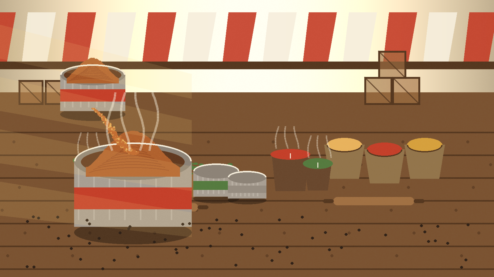
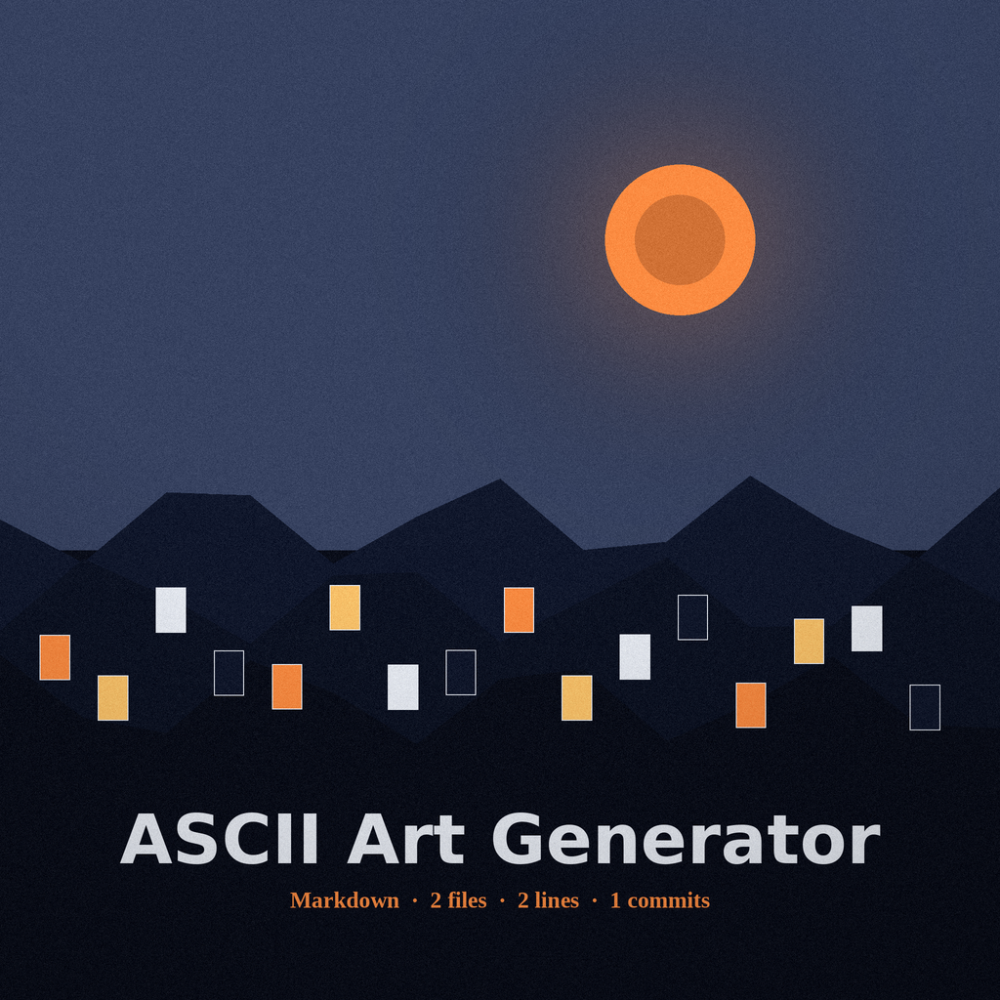
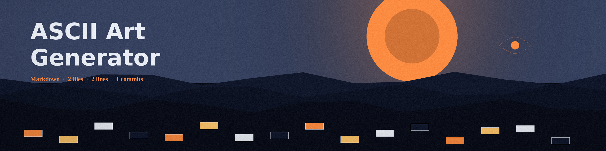
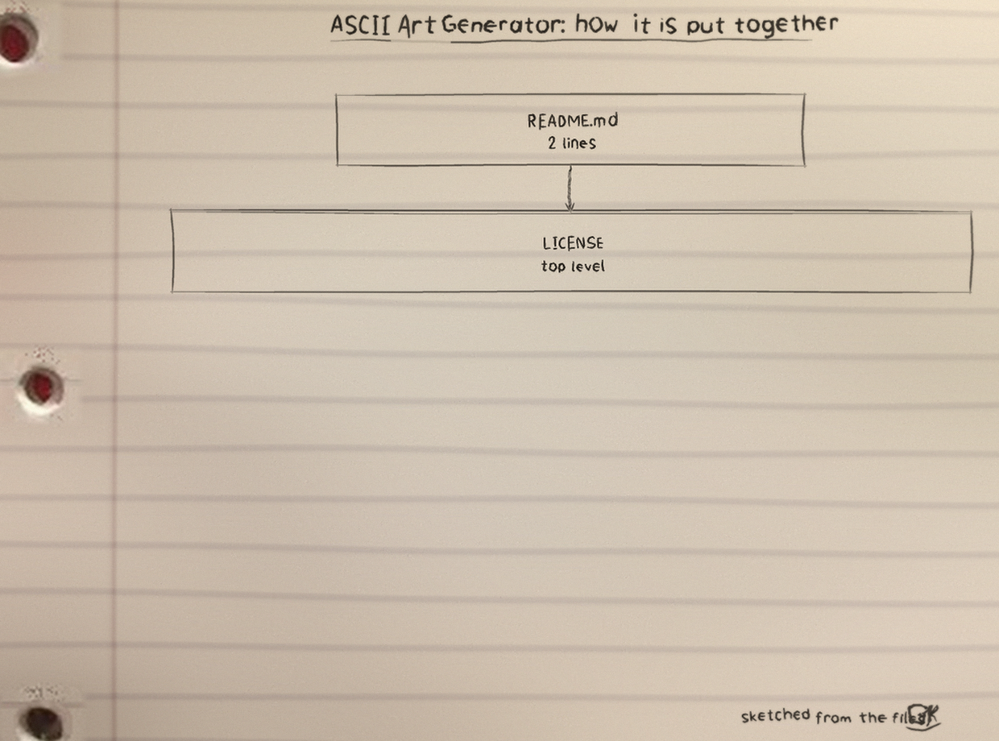
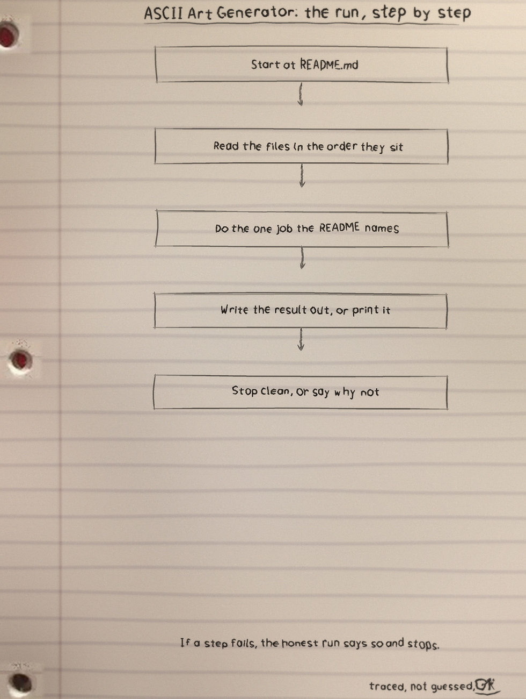
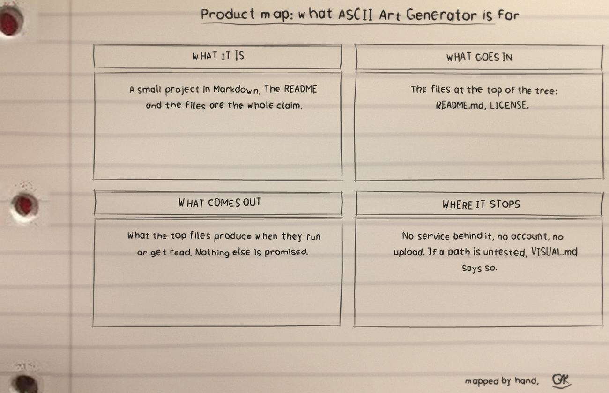

ASCII Art Generator, served from the bench
The stall is open. Pull a card from the box: first what it is, then the banners, then the photographs, then the shelf and the library.


ASCII Art Generator
ASCII Art Generator is one of my projects. The README in the repo is short, so this page sticks to what the files themselves show.
What it is
ASCII Art Generator: 2 files, 2 counted lines across Markdown 2. One job, done in the open, in files you can read.
The biggest piece
README.md carries the most
lines. If the project grows, that file is where the growth
lands first, for better or worse.
The honest gap
No test files yet. That is the honest gap, and the roadmap in the visuals folder says what the first one should cover.
Run it
The repo README has the exact commands for this one. The shape is the shape for most of my projects: clone it, read the top file first so you know what will happen, then run it on something you do not mind breaking.
$ git clone https://github.com/Epsilon0xCell/ASCII-Art-Generator.git
$ cd ASCII-Art-Generator
The code, as it sits in the repo
From LICENSE, line 12 on. I did
not tidy it for the page. What you see is what the file has.
The above copyright notice and this permission notice shall be included in all
copies or substantial portions of the Software.
THE SOFTWARE IS PROVIDED "AS IS", WITHOUT WARRANTY OF ANY KIND, EXPRESS OR
IMPLIED, INCLUDING BUT NOT LIMITED TO THE WARRANTIES OF MERCHANTABILITY,
FITNESS FOR A PARTICULAR PURPOSE AND NONINFRINGEMENT. IN NO EVENT SHALL THE
AUTHORS OR COPYRIGHT HOLDERS BE LIABLE FOR ANY CLAIM, DAMAGES OR OTHER
LIABILITY, WHETHER IN AN ACTION OF CONTRACT, TORT OR OTHERWISE, ARISING FROM,
OUT OF OR IN CONNECTION WITH THE SOFTWARE OR THE USE OR OTHER DEALINGS IN THE
SOFTWARE.The files that matter
| File | Lines |
|---|---|
README.md | 2 |
LICENSE | 0 |
Names doing the work: no named functions in the snapshot.
Drawn by hand
I sketch my projects on notebook paper so I have to understand them well enough to draw them. The full set, with the counts and how they were counted, is the ASCII-Art-Generator-Visuals folder in the repo. Nothing is drawn over the binder holes. That is a rule, not a style.



Cards from the box: the commands, verbatim
Text Banners
python3 ascii_art.py banner "HELLO" python3 ascii_art.py banner --double "HI"
The built in font covers A to Z, 0 to 9, and basic punctuation (. , ! ? - + ' " : / * _ # and space). Input is uppercased first; any other character renders as a space.
Image to ASCII
python3 ascii_art.py image photo.png python3 ascii_art.py image photo.png --width 120 --invert
Output width defaults to 80 characters; height scales automatically with terminal character aspect correction. Pillow reads PNG, JPEG, GIF, BMP and more when installed; without Pillow, Netpbm PGM and PPM, plain or raw, are read natively, so the tool still works with zero dependencies.
Shelf Use in a Shell Startup
python3 ~/ASCII-Art-Generator/ascii_art.py banner "WELCOME"
Small enough to drop into a shell startup file (.bashrc and .zshrc), so a welcome banner prints when a terminal opens.
Library Use
from ascii_art import banner, image_to_ascii
banner("CODE")
image_to_ascii("photo.png", width=100)